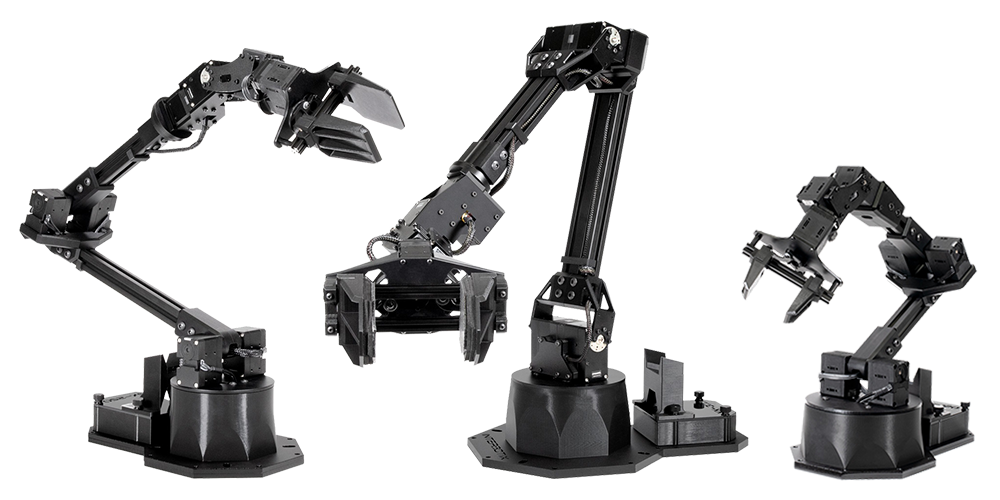

Interbotix X-Series Arms
Interbotix ROS robotic arms are the perfect addition to any research facility, university classroom or laboratory. Featuring the DYNAMIXEL X-Series smart servos, the line offers 4, 5 and 6 degree of freedom platforms. All of which are controlled by the same central ROS code repository. All of the X-Series arms are supported with tutorials, videos and software demos including MoveIt and Gazebo simulation, as well as computer vision applications such as pick and place.
What’s Here
- Specifications - Specifications for the X-Series Arms and related hardware.
- Getting Started - Guides to walk you through the process of setting up your X-Series Arm.
- ROS Interface - Guides on how to use the ROS Interfaces.
- Python-ROS Interface - Guides on how to use the Python-ROS Interfaces.
- MATLAB-ROS Interface - Guides on how to use the MATLAB-ROS Interfaces.
- ROS Open Source Packages - Guides for each core and demo package in the ROS 1 Interface.
- ROS 2 Open Source Packages - Guides for each core and demo package in the ROS 2 Interface.
- Troubleshooting - Small guides to walk users through possible issues they may occur when using a DYNAMIXEL-based robot.
Table of Contents
- Specifications
- Getting Started
- ROS Interface
- Python-ROS Interface
- MATLAB-ROS Interface
- ROS Open Source Packages
- Arm Descriptions
- Arm Control
- Gazebo Configuration
- ROS Controllers Configuration
- MoveIt Configuration
- Perception Configuration
- MoveIt Interface and API
- Python Demos
- MATLAB Demos
- Joystick Control
- Record And Playback
- Arm Diagnostic Tool
- Arm Diagnostic Listener
- PID Gains Test Environment
- Arm Puppeteering
- Dual Arm Control
- Dual Arm Joystick Control
- Contributing
- ROS 2 Open Source Packages
- Troubleshooting